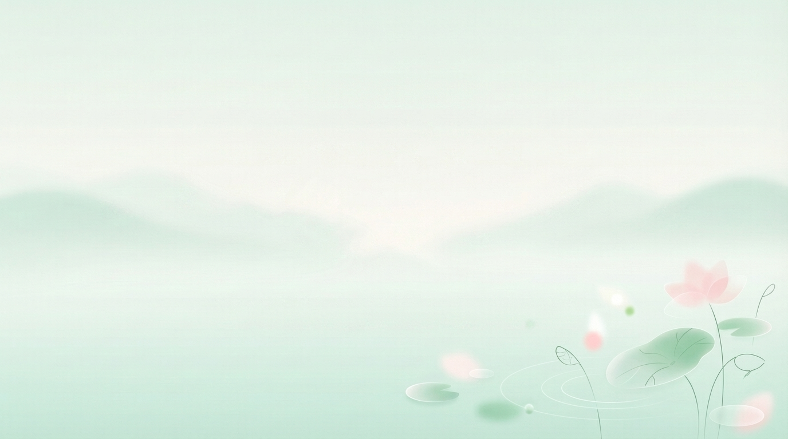

Flow Workspace
清泉沉浸笔记页

Immersive Study Habitat
让每一行文字， 像落入溪面的雨点一样， 轻轻泛开。
远处是轻雾和浅山，近处有荷叶、荷花和水纹。输入时依旧是静水回响，让整页像晨间湖畔一样安静铺开。
Draft Surface
溪面草稿
字号
18px
晨读笔记
输入时会在光标处产生波纹
今天的山谷很安静，云影缓缓滑过山脊，溪水把清晨的光切成细碎的银片。试着在这里记录你的想法，看看文字落下时，水面会怎样回应。